In this workshop module, you will give your LLM powered AI agent access to real-time enterprise data by implementing Model Context Protocol (MCP) integrations.
The Model Context Protocol (MCP) is an open standard that allows AI agents to interact with external databases, APIs, and business systems in a structured way.
MuleSoft MCP Connector uses this standard to expose existing Anypoint Platform integrations as actionable resources for AI. By using the MCP Connector and its associated Listener, developers can transform their current APIs into tools that agents can understand and invoke directly. This is especially useful for giving an agent "live" capabilities, such as allowing it to check a shipping status or update a customer record through a pre-existing MuleSoft flow.
Large Language Models include a feature called Function Calling. Function calling allows an LLM to step outside its static training by signaling the need for a specific "tool," such as a database query or an API call. Because the model cannot physically execute these actions itself, it instead signals its intent by including specific instructions in its response - developers must run the requested action and return the result to the model.
This concept is the technical foundation for how the Model Context Protocol (MCP) functions. While the Large Language Model provides the reasoning to decide which tool is needed, the Mule MCP connector allows those APIs to communicate using the protocol, effectively turning business logic into an actionable tool. This setup ensures that when an agent expresses the intent to perform a specific business action, the system can use the underlying MuleSoft integration to execute that task and return the result to the model.
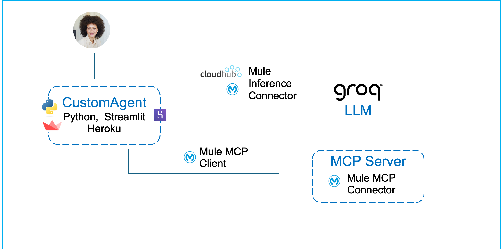
In this stage, you will build a core agentic capability using MuleSoft—not a fully autonomous agent. The focus is on implementing the reasoning and grounding mechanism that modern AI agents rely on, in a way that can later be embedded into different architectures and user experiences.
You will create a Mule-based capability that combines:
In Stage 1, you implemented an LLM-powered capability that can reason over prompts and generate responses, but which relies entirely on pre-trained model knowledge and prompt context. In Stage 2, you take the next maturity step by grounding that reasoning in authoritative, external knowledge.
This stage introduces the concept of authoritative knowledge sources and demonstrates how AI-driven systems dynamically consult them at runtime, rather than attempting to “remember” or embed all information inside the model itself. The capability you build will decide when external information is required, retrieve it through MCP, and incorporate it into the final response.
By the end of Stage 2, you will have implemented the foundational building block of a real agent: a reusable, headless reasoning-and-action capability that can answer questions using live, authoritative enterprise information—rather than relying solely on static training data, web searches, or general reasoning.
To save time, instead of assembling the flows component-by-component, we’ve provided packaged JAR files in which the key steps have already been completed. You’ll import it into Anypoint Studio, run it locally, and deploy it to CloudHub. This section walks you through the entire process end-to-end—from import to deployment and testing.
Although you are using a pre-packaged JAR rather than configuring each connector manually in Anypoint Studio, we still explain every part of it in the sections below, so you understand exactly how it works and how to apply the same approach in your own projects.
The first step is to build and deploy a Model Context Protocol (MCP) server. The MCP server represents an authoritative knowledge source that lives outside the agent. It exposes information such as advisories, updates, notices, or reference catalogs that may change frequently and should not be statically indexed.
In this workshop, the MCP server is backed by a simple Gist document and deployed to CloudHub. The key idea is not the data itself, but the pattern: the MCP server exists independently, can be queried on demand, and acts as a source of truth for latest or real-time information.
At this point, no agent is involved yet. You are intentionally building the knowledge authority first.
Open up your VM (instructions provided by your instructor). All the following hands-on steps are to be completed inside the VM.
Download the packaged JAR file (use chrome browser): Download MCP Server JAR
Typically it will download the file in the following locations inside the VM: C:\Users\workshop\Downloads
Click on File → Import and find the downloaded JAR (stage2_customer_mcp-server-v1.jar) on your VM.
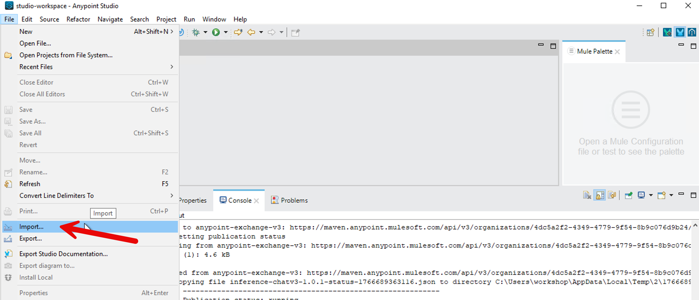
Choose the import wizard → Anypoint Studio → Packaged Application
You can monitor the import progress in the bottom right corner of the Anypoint Studio.
Once import completes, a project gets created in Anypoint Studio with the configurations packaged in the JAR file.
In Mule Anypoint Studios’ left sidebar, find the file src/main/mule/mcp-server-v1.xml as shown in the diagram below.
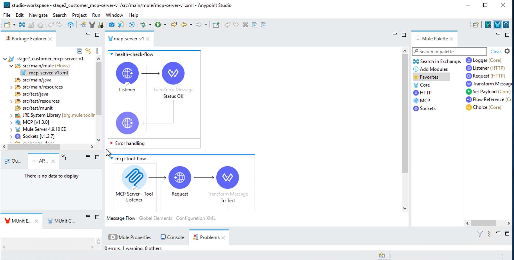
It will open the main flow of this stage 2a MCP Server Mule ‘app.'
How is this Mule app calling the source database so it can expose it as a MCP server? Click on the Request element in the flow as shown in the following screenshot.
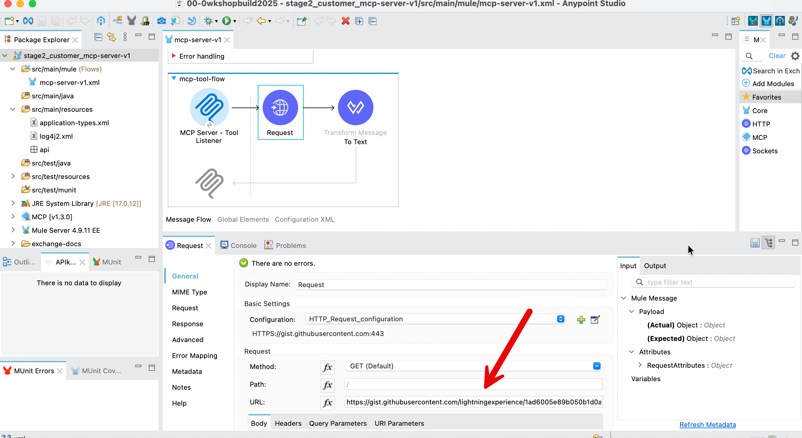
You will see the referenced URL that points to our Gist document source database.
When a user makes a request to an agent (i.e., the MCP client), this inference connector’s HTTP Request connector makes a REST call to the GIST document, fetches the content and serves it back.
Right click on the project in the left sidebar → Run As → Mule Application
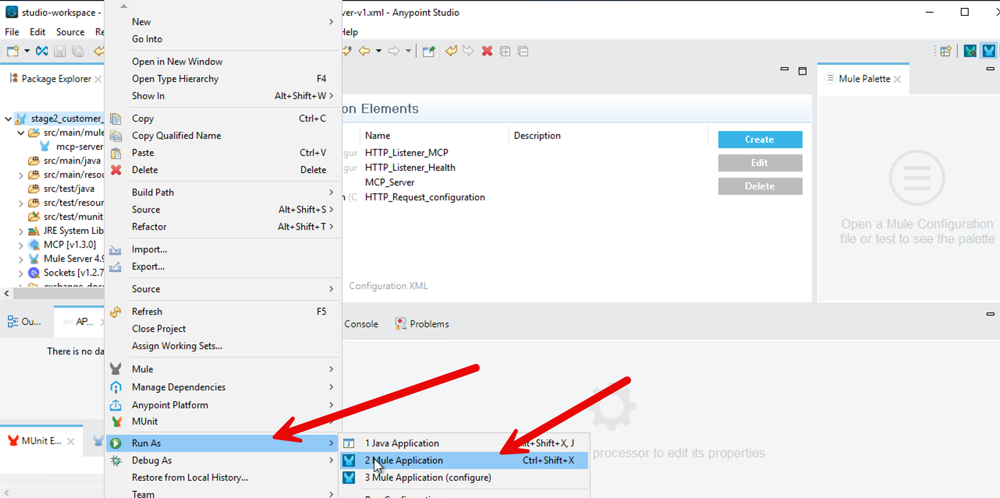
When the run completes successfully you should see a ‘Deployed’ message in the bottom screen.
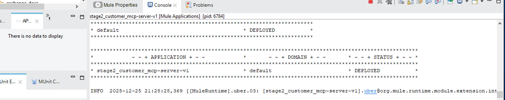
Test your locally deployed MCP server using a Windows shell:
curl http://localhost:8082/healthExpected response:
{ "status": "ok", "service": "mcp-authoritative-server"}curl -N http://localhost:8081/sseThis should establish an SSE connection (Server-Sent Events). You'll see a hanging connection - that's normal for SSE.
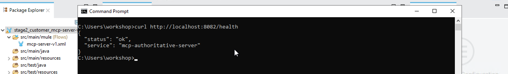
Now that we know the MCP server is working great locally, let’s now deploy the MCP Server to Mule CloudHub.
In Mule Anypoint Studio, in left sidebar, right click your project → Anypoint Platform → Deploy to CloudHub
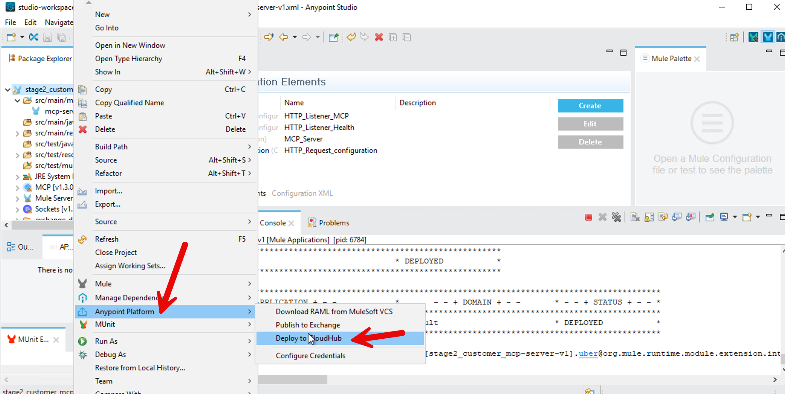
It will bring up a browser window inside your Anypoint Studio - authenticate with your Mule trial username. Select No for creating a password hint.
After sign-in, go back to your project - Right Click → Anypoint Platform → Deploy to CloudHub - select Sandbox
In the Runtime Manager dialog box, change the name to “stage2-customer-mcp-server” so it conforms to CloudHub requirements.
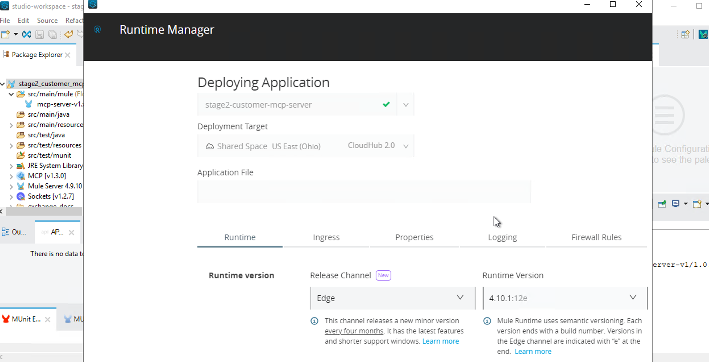
Press Deploy Application button.
Now go to MuleSoft.com sign-in with your Mule trial account. Click on Runtime Manager.
When the deployment finishes, you should see your MCP server status as running.
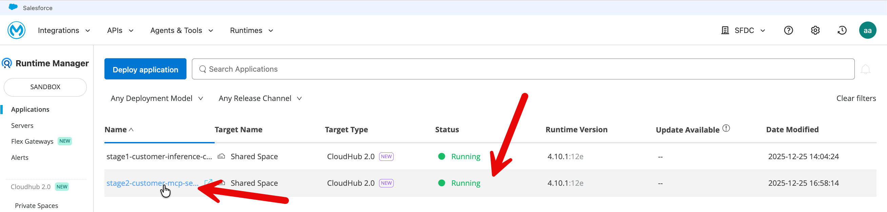
Click on your application and copy the public endpoint (top right on the application page).
Test your deployed MCP server using the following tester: https://mcp-client-tester-fa6774d469ee.herokuapp.com/
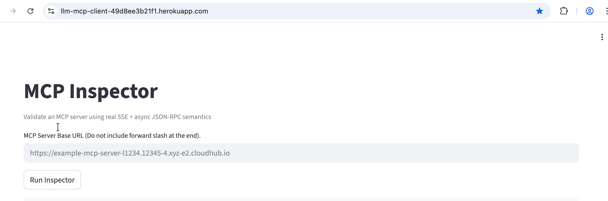
Let’s also test your MCP server from CURL.
From your Windows shell, test your MCP server deployed on Mule Cloudhub (replace the URL with your public endpoint in the following commands).
curl -N https://your-app-name.us-e1.cloudhub.io/sse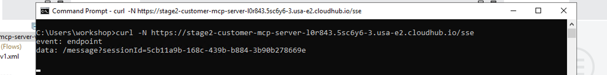
This should establish an SSE connection (Server-Sent Events). You'll see a hanging connection - that's normal for SSE.
Monitor in CloudHub: Navigate to Runtime Manager → Your Application → Logs. Review the logs to confirm the application has started successfully and to check for any errors or connection issues.
Next, you upgrade the custom agent from Stage 1 by wiring it to the MCP server using the Mule Inference Connector’s MCP client. The agent itself does not change its role — it still reasons, synthesizes, and responds — but it now has the ability to ask an external authority for fresh information when needed.
When a user asks a question that implies latest, current, or recent information, the agent queries the MCP server and incorporates that response into its answer. This happens dynamically at runtime, ensuring that answers reflect the most up-to-date context available.
The following few steps of downloading and then importing the JAR file are very similar to what you did for the previous stage 2a above.
Download the packaged JAR file (use chrome browser): Download Client JAR
Typically it will download the file in the following locations inside the VM: C:\Users\workshop\Downloads
Click on File → Import and find the file the downloaded JAR (stage2b-customer-inference-chat-mcpclient.jar) on your VM.
Choose the import wizard → Anypoint Studio → Packaged Application
You can monitor the import progress in the bottom right corner of the Anypoint Studio.
Once import completes, a project gets created in Anypoint Studio with the configurations packaged in the JAR file.
In your Anypoint Studio left sidebar, navigate to the src/main/mule and click on the xml file.
Click on Message Flow tab in the center screen.
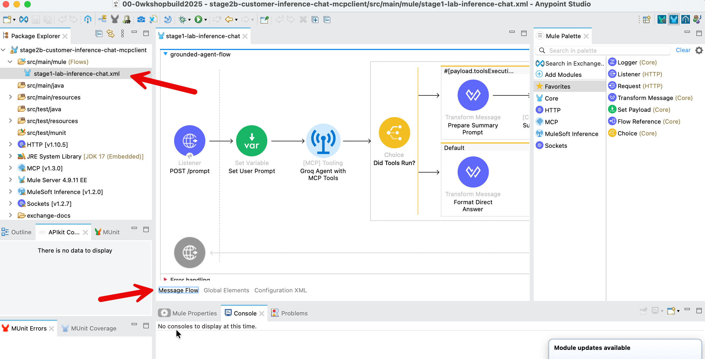
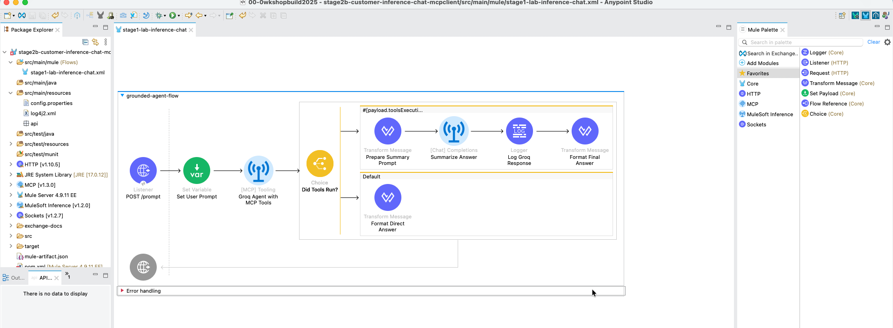
In your new project that got created (default name: stage2b-customer-inference-mcpclient) - we need to update two variables.
In the left sidebar, click on /src/main/resources/config.properties
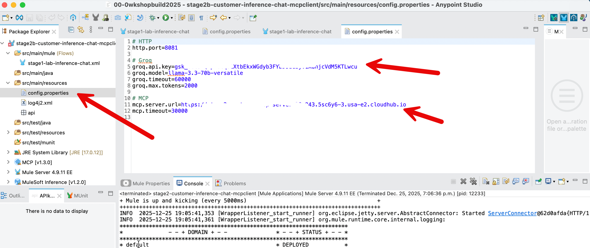
Update the value of 4 property values:
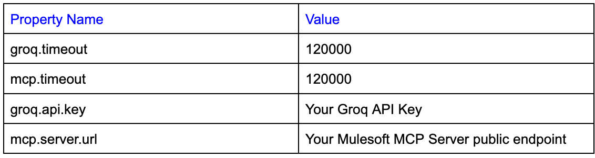
groq.timeout and mcp.timeout values as shown above.groq.api.key is the api key that you got when you had signed up in groq.mcp.server.url is the public endpoint of your mcp server that you deployed on CloudHub in the Stage 2a above. Note: please do not include forward slash at the end.After you have updated the property values - File → Save
In Anypoint Studio, right click on your project (Stage2b....) in the left sidebar → Run As → Mule Application
Once the build and run completes in the Anypoint Studio, you should see the following screen.
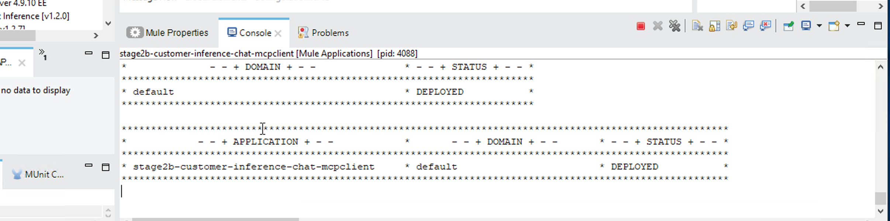
Your Inference Connector with MCP client is live locally. Let’s fine tune it - see the challenge section below.
Fine-tune your Gen AI capability so that:
Update the system instructions in the element [MCP] Tooling so the agent follows explicit rules, for example:
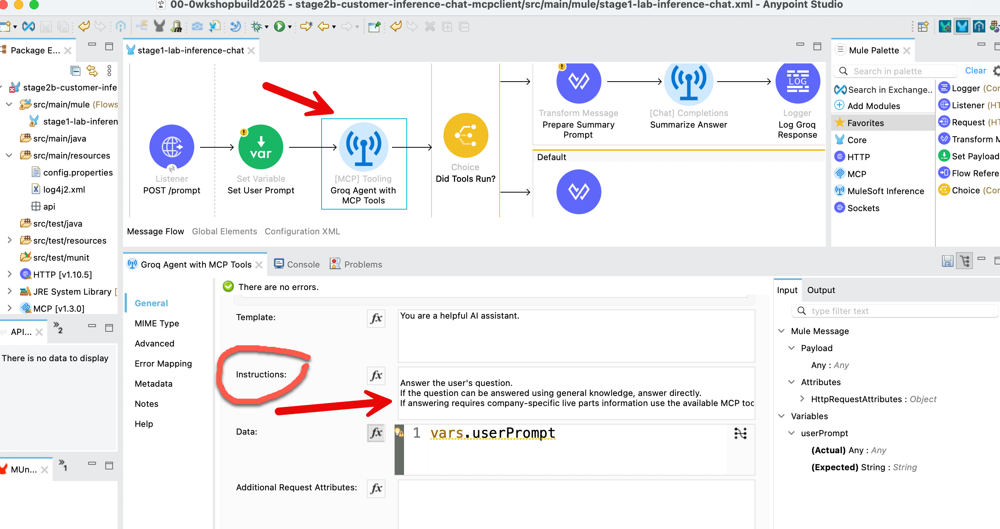
Hint: Click on the [MCP]Tooling element - replace the current text in the Instructions field (not the template field) with this block to enforce your rules:
You are an enterprise AI assistant.
You MUST follow these rules exactly:
1. If the user question involves parts, inventory, availability, status, stock levels, recalls, or operational data:
- You MUST use an MCP tool to retrieve authoritative information.
- Do NOT answer from general knowledge or assumptions.
2. If the user question is general, conceptual, explanatory, or creative:
- You MUST NOT use MCP tools.
- Answer directly using your model knowledge.
3. MCP tools are ONLY for authoritative, enterprise, or up-to-date information.
Never use MCP for opinions, explanations, examples, or creative writing.
4. Tool usage must be invisible to the user unless explicitly requested.
Follow these rules strictly.Test the different scenarios - however first we need to ‘compile’ our application again:
Once the MCP server starts in CloudhHub and your Stage2b app gets deployed in Anypoint Studio, in your windows shell, run the following two commands:
Local test (LLM only – no MCP should run):
curl -X POST http://localhost:8081/prompt -H "Content-Type: application/json" -d "{\"prompt\":\"Write a short haiku about integration.\"}"Local test (forces MCP tool invocation):
curl -X POST http://localhost:8081/prompt -H "Content-Type: application/json" -d "{\"prompt\":\"Check the inventory status for Heat Resistant polymer housing.\"}"What we learned: We learned to shape agent behavior using precise prompts and enforce the use of authoritative enterprise data for sensitive queries. By implementing a smart routing pattern, you also prevented unnecessary tool executions, ensuring your agent remains both grounded and performant.
Let’s now deploy your Stage2b app to CloudHub.
Right click your project → Anypoint Platform → Deploy to CloudHub
You may be asked to authenticate in an embedded browser that opens in Anypoint Studio. Sign in with your Mule trial account.
Select Sandbox when asked in the next screen after authentication
Click the Properties tab and fill in the values as in your config.properties file in your project - except for http.port.
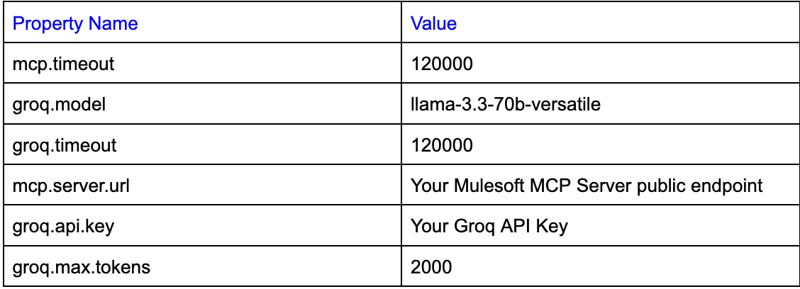
groq.api.key={your key here}
groq.model=llama-3.3-70b-versatile
groq.timeout=120000
groq.max.tokens=2000
mcp.server.url={your MCP Server URL here}
mcp.timeout=120000Please see screenshot below.
mcp.server.url property. There is no forward slash at the end.mcp.timeout and groq.timeout are set to 120000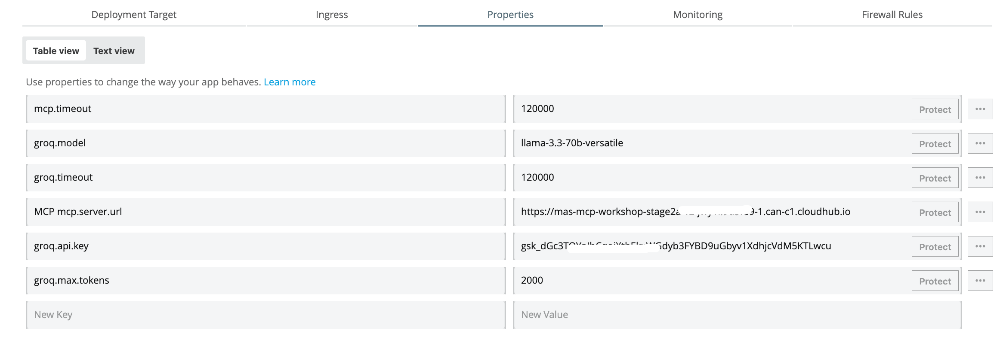
Press Deploy Application.
Now go to mulesoft.com → sign in → Runtime Manager - You would see your newly deployed application running there.
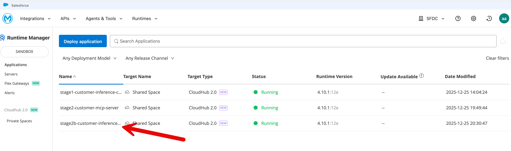
Let’s test your CloudHub deployment.
Click on your application and then in the application’s page - copy the Public Endpoint (top right on the application’s page).
Replace the url in the following command with your Public Endpoint.
CloudHub test (LLM only – no MCP should run):
curl -X POST https://stage2b-customer-inference-chat-mcpclient-xyz.5sc6y6-4.usa-e2.cloudhub.io/prompt -H "Content-Type: application/json" -d "{\"prompt\":\"Write a short haiku about integration.\"}"Replace the url in the following commands with your Public Endpoint.
CloudHub test (forces MCP tool invocation):
curl -X POST https://stage2b-customer-inference-chat-mcpclient-xyz6-4.usa-e2.cloudhub.io/prompt -H "Content-Type: application/json" -d "{\"prompt\":\"Check the inventory status for Heat Resistant polymer housing.\"}"If you see errors - please restart on CloudHub both your servers - your mcp server (deployed in Stage 2a) and your Inference Connector’s MCP client (deployed in Stage 2b).
We have built a UI-based client you can use to test your headless agentic capability.
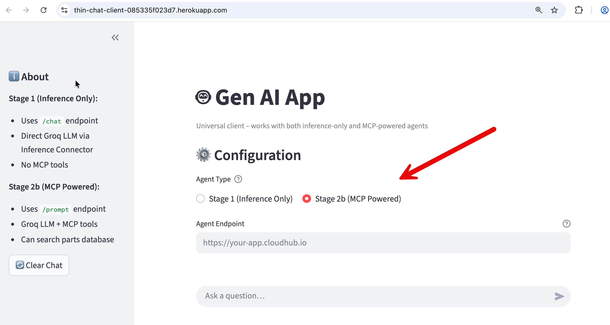
https://thin-chat-client-085335f023d7.herokuapp.com/
If you ask a generic question (“Tell me about my parts inventory“) the agent transparently fetches the parts inventory from the MCP server database and serves it to you. If you ask a general question (”Tell me a joke“) - the agent responds without making a call to the MCP server.
This app written in Python (and using Streamlit library for UI) is intentionally a thin client: it performs no reasoning, does not invoke MCP, and contains no agent logic of its own. Its sole responsibility is to send a simple { "prompt": "…" } request, receive a fully formed response, and present it conversationally.
All intelligence and decision-making remain centralized in the Stage 2b capability—specifically within the Mule Inference Connector (which includes a MCP client), the Groq LLM, and the MCP server. This clean separation reinforces a key architectural principle for customers and attendees: the UI is fully interchangeable (Streamlit, Slack, Salesforce, mobile, and more), while agentic behavior and enterprise grounding live entirely within Mule and the AI infrastructure.
What we explored today is the core of every serious AI system: a reasoning layer that knows when it does not know, and knows how to ask the right system for truth.
We built a foundational agentic capability that can be embedded into different architectures and user experiences.
Specifically, we implemented a reasoning-and-action capability using MuleSoft that combines a large language model (Groq) with optional access to external, authoritative data sources via the Model Context Protocol (MCP). This capability can receive a user question, evaluate whether the answer can be generated from the model’s knowledge alone, and—when required—retrieve up-to-date or enterprise-specific information from external systems.
When external data is needed, the capability dynamically invokes an MCP server, retrieves the relevant information (for example, documents hosted in a GitHub Gist or other enterprise repositories), and feeds that information back into the language model to produce a final, grounded response. The result is a single, coherent answer returned to the caller, without exposing the underlying tool calls or data-fetching steps unless explicitly required.
This module uses MCP as a required dependency for clarity. Production agents invoke MCP on demand and degrade gracefully when grounding services are unavailable.
At this stage, the work demonstrates agent-like behavior, but it is intentionally delivered as a headless capability, not a full agent. There is no long-term memory, goal management, user identity, or autonomous task loop. Those elements can be added later by embedding this capability inside a chat UI, workflow engine, digital agent platform, or multi-agent system.
In short, we built the core reasoning, tool-selection, and grounding mechanism that real-world AI agents rely on—cleanly separated from presentation, orchestration, and experience layers. This separation is what makes the capability reusable, testable, and production-ready.
How This Fits into the Bigger System
In the full architecture, different responsibilities are clearly separated:
Stage 2 focuses only on the first half of this picture: grounding an agent using MCP. Later stages will show how this connects to Agentforce and full multi-agent orchestration.
This Mule application represents the "Hands" of your agentic system. It does not "think" or "reason." Its sole purpose is to expose a specific capability (a Tool) that an AI agent can discover and execute on demand.
Here is the breakdown of the two distinct flows.
health-check-flow)This is a standard DevOps pattern. It provides a dedicated endpoint (/health) on port 8082. This allows monitoring tools or a human operator to verify the Mule app is running without triggering the complex MCP protocol logic.
Components:
8082.{"status": "ok", "service": "mcp-authoritative-server"}mcp-tool-flow)This flow defines the "Tool" pattern we discussed. It fetches live data from an external system (GitHub Gist) and serves it to the Agent.
MCP Tool Listener (The Trigger):
get_authoritative_live_reference with the MCP Server.HTTP Request (The Action):
GET request to the raw Gist URL. This ensures we are always fetching the absolute latest version of the data, satisfying our "freshness" requirement.Transform Message (The Output):
text/plain. This plain text format is optimized for the LLM to read and synthesize into an answer.While the workshop provides a pre-packaged JAR to save time, understanding how to build this from scratch is essential if you want to apply this design to your own enterprise systems.
When designing an MCP Server (Stage 2a), shift your mindset from orchestrating workflows to exposing capabilities.
Instead of predicting the user's journey and building an API to match it (Outside-In), we wrap our backend's atomic functions in clearly described Tools (Inside-Out). We provide the raw "lego blocks" of your system—like "Fetch Reference" or "Check Health"—and trust the AI Agent to decide how and when to assemble them to solve the user's problem.
The fundamental shift in Agentic design (including MCP server design) is moving from a Syntactic Contract to a Semantic Contract. In traditional integration, you define the syntax (endpoints and data structures) and rely on human developers to read documentation to understand the business logic. In an MCP-based design, you embed that meaning directly into the interface via natural language descriptions, enabling the AI Agent to autonomously understand not just how to call a service, but why and when it is appropriate to use it.
Before building the flows, you must set up the connections.
HTTP_Listener_MCP on port 8081 (This will carry the SSE traffic).HTTP_Listener_Health on port 8082 (For the health check).Listener Config to HTTP_Listener_MCP. This tells the MCP server to use port 8081 for its sse handshake.authoritative-ref-server and version to 1.0.0.gist.githubusercontent.com on port 443 (HTTPS).HTTP_Listener_Health./health.{"status": "ok", ...}.MCP_Server global config you created in Step 1.get_authoritative_live_reference. (Note: Use snake_case as this is standard for LLM tool naming).{} because this tool requires no input arguments.GET.https://gist.githubusercontent.com/lightningexperience/1ad6005e89b050b1d0ab2e5de1350bb1/raw/%dw 2.0
output text/plain
---
payloadOnce deployed, this application will wait silently. It does not do anything until an Agent connects via SSE on port 8081 and explicitly requests the get_authoritative_live_reference tool.
This stage represents the transition from a simple chatbot (Stage 1) to a Grounded Agent. The flow connects the LLM (Groq) to an MCP Server, allowing the AI to fetch real-time data before answering the user.
In this stage, the application doesn't just "imagine" answers; it has access to tools. The logic introduces a decision branch: did the AI use a tool to get data, or did it answer from general knowledge?
This is the heart of the flow (labeled ms-inference:mcp-tools-native-template in the XML).
MCP_Client_CloudHub config.Immediately after the agent runs, the flow hits a Choice Router (doc:name="Did Tools Run?"). This is critical for handling the response format.
#[payload.toolsExecutionReport? and sizeOf(payload.toolsExecutionReport) > 0]This Mule DataWeave expression checks if the payload contains a "tools execution report." If it does, it means the AI accessed external data.
Note: DataWeave is MuleSoft's scripting language designed specifically for querying and transforming data between different formats, such as JSON, XML, and CSV.
If the condition is True (top path in the screenshot), the flow performs a Retrieval-Augmented Generation (RAG) pattern:
ms-inference:chat-completions) a second time. This time, the AI reads the raw data and converts it into a human-friendly sentence.DataWeave Explanation (Prepare Summary Prompt)
This script is the "bridge" between the raw data the tool found and the AI's brain. It formats the data so the AI can read it.
%dw 2.0
output application/json
[
{
"role": "system",
"content": "You are a helpful assistant. You have just retrieved data from a tool. Use the provided Tool Data to answer the User's original Question concisely. Do not mention the JSON structure."
},
{
"role": "user",
"content": "User Question: " ++ vars.userPrompt ++ "\n\nTool Data: " ++ write(payload, "application/json")
}
]Line-by-Line Breakdown:
output application/json: This tells Mule to output a JSON object, which is exactly what the Chat Completions connector expects as input.
The Array [...]: We are building a list of messages to send to the AI. This follows the standard "Chat History" format (System message first, then User message).
The System Role:
"role": "system": Defines the persona.The User Role:
"role": "user": Represents the current query.++): This is the magic part. It stitches together two things:
vars.userPrompt: The question the user originally asked (e.g., "What is the status of order 123?").write(payload, "application/json"): The payload currently holds the raw answer from the MCP Tool. The write() function turns that raw object into a text string so it can be inserted into the prompt.If the condition is False (bottom path in the screenshot):
This guide reconstructs the Stage 2b flow.
Make sure your Anypoint Studio palette has the following modules installed (visible in your screenshot):
Before building the flow, set up the connections.
0.0.0.0 and port ${http.port}.Text Generation Config.${groq.api.key} and Model Name to ${groq.model}.mule-inference-client.${mcp.server.url} (This points to your external Python/Node MCP server)./prompt. Method: POST.userPrompt.#[payload.prompt]. (This saves the user's question for later use in the DataWeave script above).mcp-tools-native-template from the MuleSoft Inference palette.Groq_Text_Generation_Config.MCP_Client_CloudHub.#[payload.toolsExecutionReport? and sizeOf(payload.toolsExecutionReport) > 0](This logic means: "Did we actually run a tool?").
Chat completions from the Inference palette.#[payload] (passing the script output to the AI).#['Groq Raw Response: ' ++ write(payload, 'application/json')].%dw 2.0
output application/json
{ "answer": payload.choices[0].message.content default "Error" }Note: In the "Default" case, the payload from the Groq Agent is already the plain text answer because no tools were triggered.
This stage transforms our standard chatbot into an intelligent "Grounded Agent" capable of accessing real-time business data to solve actual customer problems. By integrating with the Model Context Protocol (MCP), the system now autonomously decides whether to answer a general question instantly or reach into our backend systems to retrieve specific, live information (like inventory or order status). This logic ensures that AI responses are not just conversational but factually accurate and based on current company records, automatically converting complex system data into clear, human-friendly answers for the user.
RAG provides enterprise memory, MCP provides real-time authority, agents reason and act — and Mule Fabric decides who speaks, when, and why.
Typically, Agents do not own corporate knowledge. They consult authoritative systems (e.g., RAG (Vector Databases), MCP) when they need the latest truth.
In our envisioned architecture, Mule Agent Fabric (Broker) is the central orchestration layer that coordinates two specialized agents, each with a clearly bounded responsibility.
The Custom Agent is optimized for fast reasoning and external intelligence. It is integrated with an MCP client, which allows it to query an MCP server that exposes authoritative, frequently changing information (for example, live advisories, updates, or reference catalogs). The MCP server is treated as a real-time source of truth and is queried on demand rather than indexed (in a vector database).
The Agentforce Agent is optimized for enterprise operations. It is connected to Data 360 (formerly Data Cloud) and uses RAG to reason over governed, indexed enterprise knowledge such as documents, historical records, and operational data. It is also responsible for taking Salesforce actions (cases, updates, workflows) in a policy-safe way.
Importantly, the agents do not coordinate with each other directly. All routing, sequencing, and authority decisions are handled by the Mule broker.
Comparison of the MCP Client - Server-LLM Flow with Mule Agent Fabric Broker Orchestration
In short, Inference-based planning decides how one agent should act right now, while Fabric Broker decides which agent should act and how work flows across an agent ecosystem.
Enterprises typically have two different kinds of knowledge needs:
In this use case, when a user asks questions like “Are there any latest updates?” or “Has anything changed recently?”, the system treats that as a freshness requirement, not just a data source question. The MCP server provides the authoritative answer, while Agentforce remains the system of record for enterprise data and actions.
This pattern is universal and applies across industries (manufacturing, finance, healthcare, telecom), regardless of the specific data being queried.
MCP works only when three conditions align:
However, when response requires understanding and interpretation rather than lookup—such as synthesizing themes across 50 contracts, summarizing customer complaints, or discovering what questions to ask—RAG is necessary because no single retrievable fact exists, and the goal is faithful representation without hallucination.
The clean rule: use MCP when correctness depends on data being current and authoritative (checking the live system before acting), and use RAG when correctness depends on data being understood and interpreted (reading the policy manual carefully)—both are forms of correct response serving different needs, and enterprise AI systems typically need both.
How MCP & RAG fit in with the Mule Broker Orchestration.
The key orchestration concept is temporal authority. The Mule broker does not simply route based on “general vs support.” Instead, it evaluates whether the user’s question requires latest or real-time information.
This orchestration logic lives entirely in the Mule broker instructions, not inside agent prompts or code. As a result, behavior can be changed, extended, or audited without redeploying agents.
While MCP can be thought of as "REST with a standardized contract," its real power lies in how it transforms tool integration from procedural function calls into declarative capabilities that AI agents can discover and orchestrate autonomously.
Unlike traditional APIs, which expose fixed endpoints for specific user flows (for example, GET /inventory), an MCP server exposes tools instead of endpoints. In this module, we exposed a single tool that fetches a document from a GitHub Gist. We did not define a workflow or prescribe when the tool should be used; we only declared the capability.
How the data flow happens in our Flow: MCP Client-Server-LLM interaction
How do you add multiple MCP tools to the MCP client?
Multiple MCP servers are wired by adding parallel MCP Tooling elements at the same decision point — not by adding routes, subflows, or orchestration logic.
In context of our project app, the second MCP server is added by placing a second [MCP] Tooling element in the same flow, immediately after the same “Set User Prompt” step, exactly as shown in the diagram. Both MCP Tooling components consume the same input context (the prepared user prompt) and both write their results back into the same payload structure that is later evaluated by the “Did Tools Run?” Choice.
The only difference between the two tooling elements is that each one references a different MCP Client global configuration, pointing to a different MCP server. There is no subflow, no chaining between tooling elements, and no sequencing logic added.
At runtime, the agent reasons over the combined tool registry exposed by all MCP servers, decides which specific tool to invoke, and Mule executes the corresponding MCP Tooling call; the Choice router then behaves exactly as before, checking whether any tool was executed and continuing downstream unchanged.
In the following diagram, only one MCP Tooling element is executed per request; the agent selects which tool to invoke at runtime.
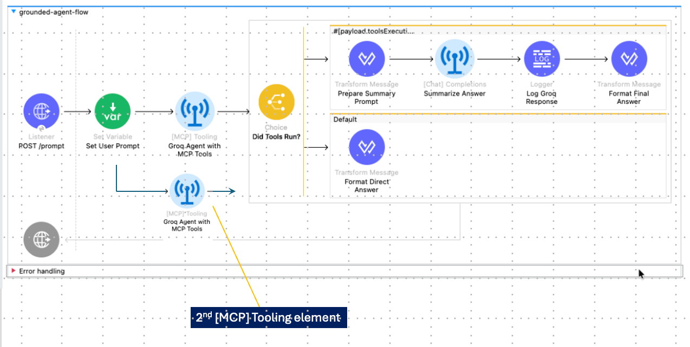
Commercial MCP clients (such as Cursor or Claude) abstract this wiring entirely by exposing MCP server configuration through their settings UI. For example, in Cursor, adding another MCP server (such as the one built in this workshop) is done by updating the MCP configuration in Cursor Settings. In our Mule-based implementation, this same configuration is expressed explicitly in the flow by adding another MCP client configuration and tooling element, making the wiring visible and fully governed.
What happens when there are multiple MCP servers and multiple tools registered with a MCP client?
Unlike traditional API design, there is no equivalent of “Mule APIkit path routing” for tools; tool selection is entirely semantic and occurs at runtime inside the LLM’s reasoning step.
In practice, adding multiple MCP tools does not require additional routing logic or orchestration flows.
The protocol standardizes everything - from JSON-RPC request/response formats to tool discovery patterns - meaning you write one MCP client that works with any MCP server, whether it's providing weather data, database queries, or file operations. For example any MCP client (e.g., Cursor AI Agent) can talk to the MCP server you deployed in this workshop.
MCP uses persistent bidirectional communication (Server-Sent Events) rather than REST's request-response model.
In Stage 2a you will see this difference vividly during the testing phase.
/sse endpoint, your terminal will appear to "hang". This is not a bug; it is the SSE handshake in action. You will see the server verify the connection and issue a sessionId. This open channel is the "persistent connection" that allows the server to push updates and maintain the conversational state required for agentic workflows.What Makes MCP Special for AI Workflows
Instead of writing custom glue logic with hardcoded decision trees, MCP enables the LLM to reason about tools.
Every MCP server self-describes its capabilities through a mandatory tools/list discovery method, declaring available tools with precise schemas that tell clients exactly what parameters are needed without parsing separate documentation.
This schema-driven interaction, combined with MCP's persistent bidirectional communication pattern (unlike REST's request-response), creates an environment optimized for how LLMs actually work - they've been trained on millions of function call examples and reliably generate structured tool calls when presented with clear schemas. The result is true reasoning-driven automation where AI agents can reflect on their tool usage, chain multiple calls together, and adapt their strategy dynamically rather than following predetermined workflows.
In the section 2a - we build and deploy a MCP server. While you won't see the LLM read the schema until Stage 2b, you will deploy the MCP server with a pre-packaged JAR that contains the mcp:tool-listener. This listener automatically handles the tools/list discovery requests mentioned in your text.
By deploying your MCP server to CloudHub, you are creating a "live" authority that conforms to the JSON-RPC standard, ready to be discovered by any compliant client—whether it's the Mule Agent you build next, or a desktop app like Claude.
In developing an MCP server, you must decide on the appropriate design pattern, as the protocol allows data sources to be exposed as Tools and/or Resources. In our project, we implemented the Gist data source specifically as an MCP Tool
Implementing our MCP server with Tools instead of Resources was a deliberate architectural choice to prioritize immediate freshness, but it represents just one valid design pattern for this use case.
Alternatively, we could have exposed the Gist document as a Resource—passive background context that the client preloads and caches—paired with a separate Search Tool to filter that content based on specific user queries.
While that hybrid approach is powerful for managing stable reference data, our tool-only design enforces a strict "live query" model, ensuring the agent retrieves the absolute latest advisories on-demand without the complexity of managing client-side state or deciding when to refresh cached resources.
In a traditional REST API, the client already knows everything it needs up front: the endpoint URL, the request shape, and the response pattern. That’s why a single curl or a GET/POST command works—you are calling a fixed, globally addressable endpoint.
MCP deliberately does not work this way. An MCP server does not expose a permanent “tool endpoint” that you can call directly.
Instead, MCP is a two-step protocol.
/message?sessionId=abc123).Remember the command we gave to our MCP CloudHub endpoint and the response we got (it seemed to be hanging).
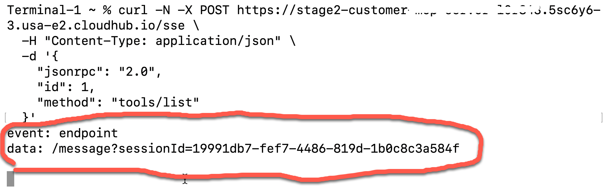
What this does:
-N flag keeps the connection open for SSE streaming/sse endpointWhat we get back from the MCP server is not a tool response; it's the protocol handshake. The server is telling us it has created a session for this connection (event: endpoint) and it returns a session-specific message endpoint (data: /message?sessionId=19991db7-...). That endpoint did not exist before the SSE connection, it is unique to this session, and it is the only place where tool invocations must be sent.
At this stage, the server does not list tools or capabilities yet—tool discovery and invocation happen only after the client sends an initialize request with the provided session ID, and then in the third step, sends tools/list or tools/call messages to the issued endpoint.
The MCP protocol's multi-step handshake (SSE connection → session creation → initialize → tool operations) requires a stateful SSE client that maintains persistent connections with active event listeners. The Mule MCP Connector uses asynchronous SSE client libraries that hold the connection open, register event handlers, and process incoming SSE events as they arrive on the stream.
We can not directly use REST paradigms or tools - for example curl is fundamentally synchronous and stateless - while MCP server expects all requests and responses to flow through the same persistent SSE connection with proper event-driven handling, which curl's request-response model cannot replicate. In short, REST lets you call a known endpoint once. MCP requires you to first establish a live session, then act within it. That extra step is not overhead—it’s the foundation that makes MCP dynamic, safe, and agent-native.
Server-Sent Events (SSE) is a protocol built on top of HTTP. SSE is used in MCP because the protocol is not just about sending requests; it's about maintaining a live conversational context between client and server. SSE allows the server to push structured events to the client over time: capability announcements, session state, and other protocol-level signals.
MCP Transport Options: MCP supports three transport mechanisms for client-server communication.
/sse endpoint, where the server pushes JSON-RPC responses as events over a persistent HTTP stream—this is used for network-deployed servers like CloudHub or web-accessible MCP servers.The choice between SSE and stdio is deployment-driven: remote servers require SSE for network communication, while local servers use stdio for inter-process communication on the same machine.
Mule MCP Connector on Exchange: https://www.mulesoft.com/exchange/com.mulesoft.connectors/mule-mcp-connector/minor/1.3/pages/home/
Mule MCP Connector documentation: https://docs.mulesoft.com/mcp-connector/latest/mcp-connector-studio
We are building a single, real-world AI agent that:
From the user’s perspective, there is one agent. Tool usage is invisible unless explicitly requested.
The solution consists of two Mule applications:
This application is the agent. It contains:
/prompt entry point for usersThe agent performs three reasoning steps using the same LLM:
There is no separate orchestration service and no agent-to-agent routing at this stage.
This application hosts enterprise tools and data access:
mcp:tool-listener)The agent application calls this app only when grounding is required.
This separation keeps the design deterministic, auditable, and extensible.
This is fully expected in your implementation.
Your MCP server is fully functional as deployed. MCP clients interact exclusively through the /sse endpoint, which is working correctly on CloudHub. The /health endpoint is not part of the MCP protocol and is only provided as a convenience for local monitoring and debugging.
Locally, /health is accessible on port 8082, but CloudHub does not expose that port externally, which is why the remote health check fails. Since MCP clients never call /health, no changes are required.
If you later decide to support remote health monitoring, you can expose the /health endpoint on port 8081 so it shares the same HTTP listener as /sse.
This workshop demonstrated the architecture of a Distributed Agentic System. We moved away from traditional "Request-Response" integration (where you hard-code every step) to "Reasoning-Action" integration (where the system decides the steps).
Here is the exact technical flow of the system we built:
1. The Trigger (The Client) It starts when you send a curl request to your local Mule app. This hits the HTTP Listener on port 8081. At this point, the Mule flow is just a "dumb pipe"—it has the user's question ("Check inventory"), but it has no idea what it means or how to answer it.
2. The Inference Connector: The flow passes the question to the MuleSoft Inference Connector. This connector is the bridge to the LLM (Large Language Model) hosted by Groq.
get_inventory available if you need it."3. MCP: This is where the magic happens. The Inference Connector sees Groq's request to run get_inventory.
4. The CloudHub Server: Your CloudHub server receives the signal. It executes the specific flow defined for get_inventory (which, in your case, retrieved the mock data file). It packages the result into a standardized JSON format (the "Tool Execution Report") and streams it back down the SSE tunnel to your local machine.
5. The Synthesis: Finally, your local Mule app has the raw data (the JSON dump). But it doesn't send that to the user.
You successfully built a loop where an AI model on one server "drove" a business process on a completely different server, using MuleSoft as the secure nervous system connecting them.